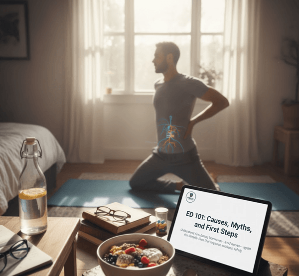

Erectile Health

ED 101: Causes, Myths, and First Steps
Understand circulation, hormones, and nerves—then apply the first lifestyle fixes that improve erections safely.
Science-backed insights for maximizing male health and performance.
Dive into evidence-based guides on optimizing testosterone, enhancing performance, and navigating the best treatments for Erectile Dysfunction (ED) and male longevity. We provide the science you need to live sharper and stronger.
Explore ProductsResearch-driven playbooks on erections, testosterone, and longevity. Updated weekly with actionable steps you can use tonight.
Understand circulation, hormones, and nerves—then apply the first lifestyle fixes that improve erections safely.

Sleep, lifting, and nutrition protocols that nudge T-levels upward without reckless shortcuts.
Daily drills that improve blood flow, hardness, and control in under ten minutes a day.
How cortisol, REM cycles, and nervous-system tone dictate desire and erectile quality.
Creatine, L-citrulline, tongkat ali, and zinc—what to keep, what to skip, and how to dose.
An 8-week cardio + strength plan to support erections, stamina, and long-term vascular health.

A clear breakdown of blood flow, nitric oxide, and nervous-system signals that make erections possible.

Fatigue, brain fog, belly fat, and muscle loss are often the first signals—long before libido drops.

When lifestyle changes are enough—and when repeated low labs plus symptoms justify TRT with medical monitoring.

Why cooked tomatoes and zinc-rich foods help modulate inflammation and support long-term prostate function.

How seat pressure affects nerves and blood flow—and simple bike-fit fixes that reduce sexual side effects.

Visceral fat increases aromatase, driving a cycle of lower testosterone, higher estrogen, and easier fat gain.